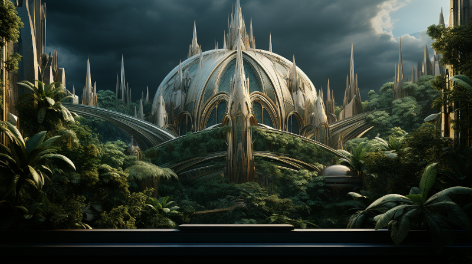

First Era: The Amearans

Figure 1: Ancient Amearan City.
In the annals of Naurrnen’s sprawling history, the First Era emerges as a monumental but enigmatic age. This age is ascribed to the legendary civilization of the Amearans, a people who, as lore and ruins suggest, possessed wisdom, artistry, and powers unparalleled. Though their very existence is relegated to the haze of myth and the findings of scholarly antiquarians, the legacies attributed to these lost people persist in a myriad of forms, inspiring awe, veneration, and a ceaseless quest for understanding.
The Amearans are immortalized as masterful builders, their architectural feats defying all conventional wisdom and technology. The ruins that dot the landscape, often constructed from materials so durable and unique that they baffle even the most skilled artisans of today, stand as silent witnesses to an age of splendor long passed. Towering obelisks, grand amphitheaters, labyrinthine underground complexes, and sprawling citadels—these are but the earthly remnants of an otherworldly civilization. The intricate design and almost magical resilience of these structures stir the imagination, leading many to speculate that the Amearans had harmonized the forces of nature and harnessed them in ways unimaginable.
Not just builders, they are also considered the world’s first scholars and philosophers. Scrolls, inscriptions, and glyphs—often incomprehensible—are found in various ruined sites, fuelling speculations about a lost repository of knowledge. Were they mere scribes, or were they privy to truths that could elevate or doom civilizations? Though the written remnants are mostly unreadable, some scholars of Naurrnen claim to have decoded fragments, only to be met with more questions than answers.
The Amearans are further revered as magicians or perhaps priests of an arcane order, for scattered among their ruins are artifacts imbued with inexplicable properties—stones that glow without fire, fountains that never run dry, and gates that stand open yet impassable. Occasional reports of mystical occurrences near these ancient sites give rise to myriad legends—stories that tell of gateways to other realms, of time standing still, and of whispers in forgotten tongues.
Yet, for all their perceived glory, the Amearans are as elusive as the morning mist. What became of them? Did they, as some legends suggest, ascend to a heavenly realm, leaving behind a world unworthy of their wisdom? Or did a calamity, perhaps self-inflicted, erase them from the pages of time? Theories abound; from divine rapture to tragic hubris, but no singular account can lay claim to irrefutable truth.
Such questions form the bedrock of cultural, spiritual, and scholarly pursuits in Naurrnen. Expeditions are mounted, treatises written, and debates held—all in the quest to piece together this grand cosmic puzzle. Despite the countless cycles of sun and moon since their presumed departure, the First Era, the age of the Amearans, remains an unfathomable enigma—a haunting refrain in the ever-expanding symphony of Naurrnen’s rich history.